This document explains how to use TOMOYO Linux LiveCD. TOMOYO Linux LiveCD is a CD image which contains Ubuntu installed TOMOYO Linux kernel and tools. Using TOMOYO Linux LiveCD, you can try TOMOYO Linux without any effects to existing system.
You can download ISO image file of TOMOYO Linux LiveCD at LiveCD page in TOMOYO Linux project web site.
Please burn the ISO image into CD-R. Otherwise, you can boot TOMOYO Linux LiveCD with VMware Player, which is available at no fee.
When you boot your PC from LiveCD, you can see the following screen.
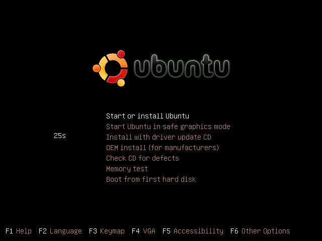
Please wait a while or press Enter, then the system boots as a normal Ubuntu. When boot sequence has finished, the following screen is shown.
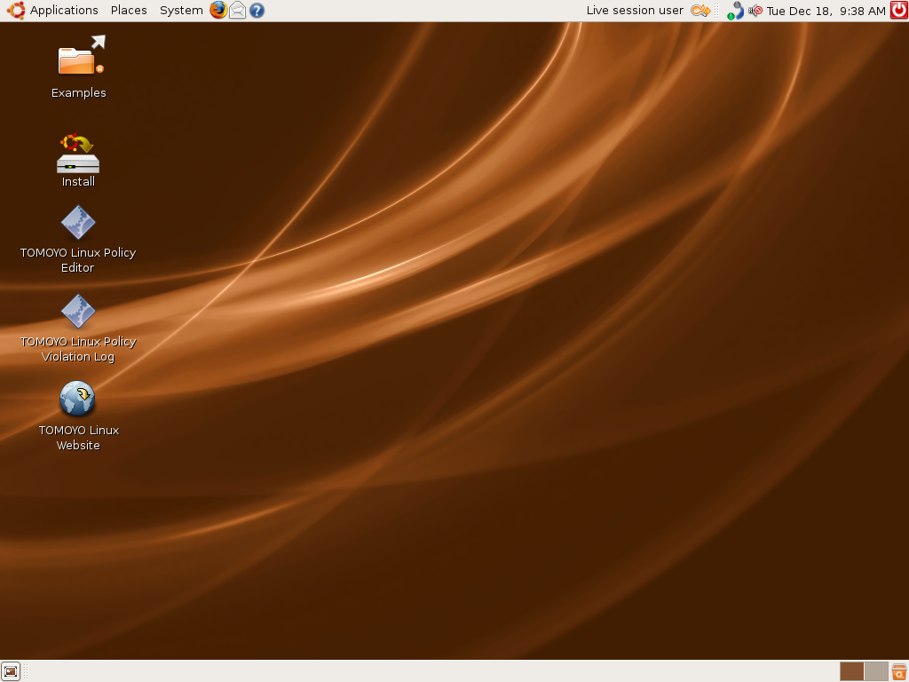
The following two icons are on your Desktop.
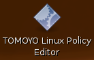 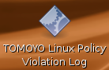
Please double-click the icon named "TOMOYO Linux Policy Violation Log". Then you can see the following window.
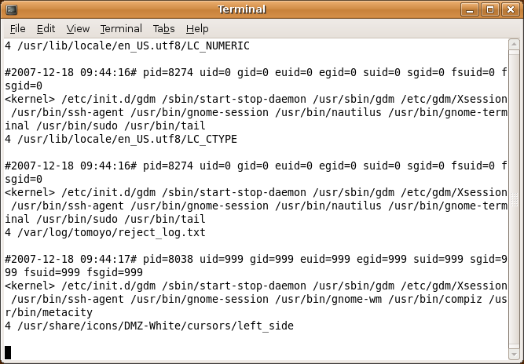
This window is showing accesses which violate the policy of TOMOYO Linux. New violation accesses are showed instantly. Since liveCD is configured to boot in empty policy, all accesses are outputed as policy violation logs. Please keep the window shown and operate some functions. The logs that what process accesses which resources are shown in real time.
In the next, please double-click the icon named "TOMOYO Linux Policy Editor". Then the following window is shown.
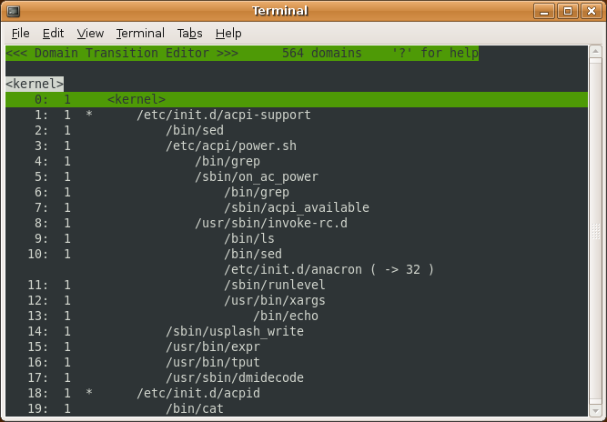
This window displays all invoked processes in the tree structure. Each line is called "domain". All invoked processes from the beginning of boot sequence are monitored by TOMOYO Linux kernel. The information that what process accesses which resources is recorded as a TOMOYO Linux policy. You can understand your Linux's behavior easily by browsing TOMOYO Linux policy. That's the greatest characteristic of TOMOYO Linux.
The first situation of policy editor shows process invocation history whose origin is <kernel>. Please scroll down as you like and confirm the process invoked in your system.
Let's try to find the process named "gnome-terminal". Please press 'F' key, then a prompt is shown in the bottom of the window. Please input "gnome-terminal" and press Enter.
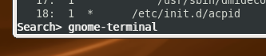
You can see that gnome-terminal invoked /usr/sbin/sudo, and /usr/sbin/sudo invoked /usr/bin/tail and /usr/lib/ccs/editpolicy .
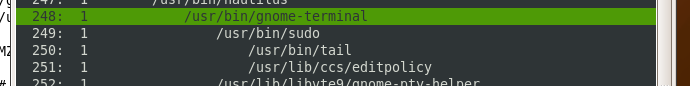
Please press enter on /usr/bin/tail .
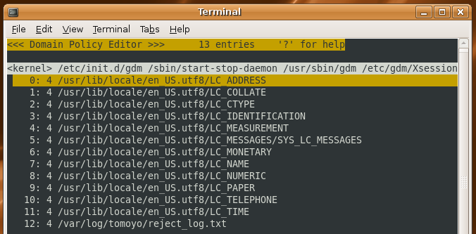
The leftmost number of each line is line number, and next number is the access permission. This permission number is the same as chmod command; 1 is execute, 2 is write, 4 is read and 6 is read/write. These lines show the tail command read some locale files and /var/log/tomoyo/reject_log.txt . This policy is the result of learning the behavior of double-clicking "TOMOYO Linux Policy Violation Log" icon.
Please press Enter to go back to the previous domain-tree view. Please browse several domains and permissions as you like.
Now let's try to restrict accesses by TOMOYO Linux. Please keep the policy editor in background, and start "Terminal" in the "Application" menu of the top of the display (Applications -> Accessories -> Terminal).
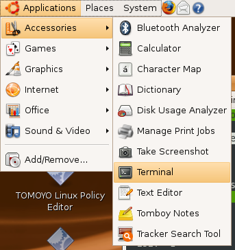
After starting terminal, please go back to the policy editor and press 'R' key to reload TOMOYO Linux policy. Please find /bin/bash that is the child of gnome-terminal . To find bash, you can use 'F' key like the previous operations.
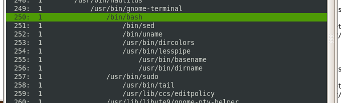
This bash is running in the "Terminal" window. There are domains of sed, uname, and so on, which were automatically executed in bash start sequence. Please type the following command in the terminal.
$ head /etc/passwd $ bash $ tail /etc/passwd $ exit
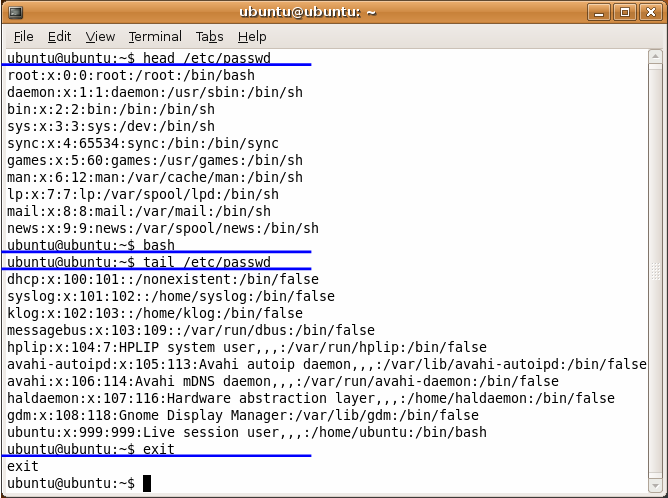
After that, please go back the policy editor and press 'R' key, then you can see that domains of executed programs are appended.
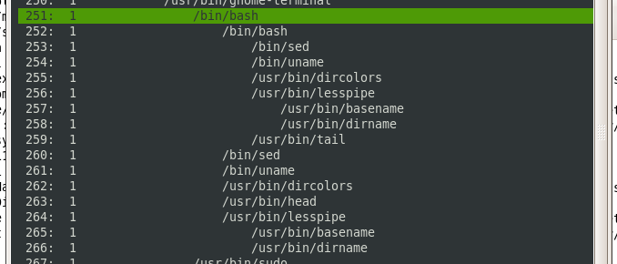
Please pay attention to the numbers in the next of line numbers. All lines show '1' currently.
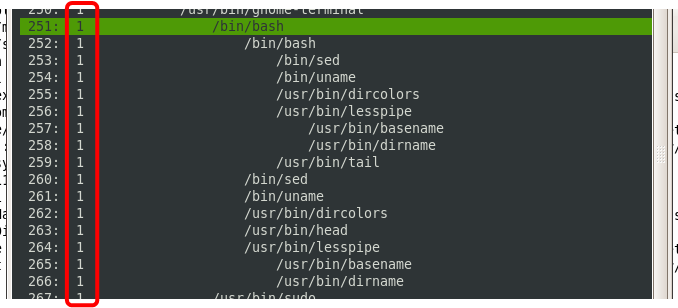
These numbers show the process's running mode of TOMOYO Linux, which is called profile number. The profile numbers of LiveCD are 0-3 and all domains are initially assigned profile number 1 (learning mode).
| profile number | meanings |
|---|---|
| 0 | disabled mode (TOMOYO Linux do nothing) |
| 1 | leaning mode (policy violation accesses are permitted and appended into policy) |
| 2 | permissive mode (policy violation accesses are permitted and recorded into log) |
| 3 | enforcing mode (policy violation accesses are denied) |
To enable TOMOYO Linux access restriction, you need to assign profile number 3 to domain. Let's two bashes restricted in this tutorial. Please press Space key at bash just below gnome-terminal, then '&' is shown at the left of the line number. This '&' is the 'selected' mark.
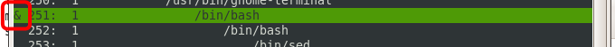
Please press Space key at bash the second bash.
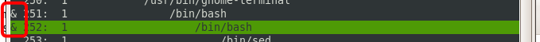
After that, please press 'S' key then prompt is shown in the bottom of the window. Please input "3" and press Enter.
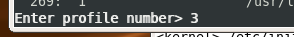
Profile number 3 is assigned to the two bashes.
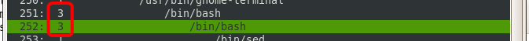
bash is already running in enforcing mode. Please execute some commands in the terminal. Commands that are not executed in learning mode will be denied. In the following window, "head /etc/password" succeeded, but executions of "ls" and "ps" are denied.
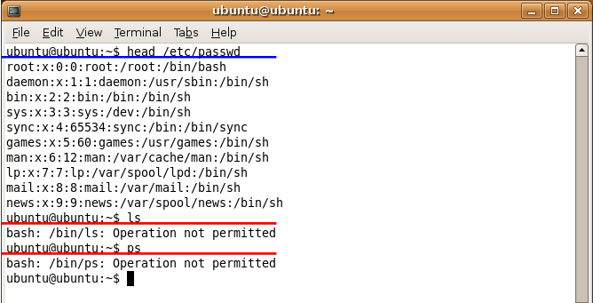
In addition, first-level bash can't execute "tail /etc/passwd", but second-level bash can do it.
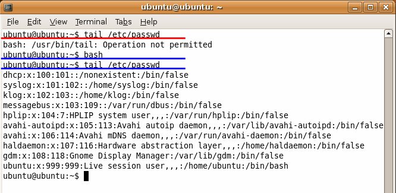
This is because TOMOYO Linux distinguishes processes according to their invocation history. In current policy, the following two bashes exist.
head command is only permitted in the first bash, and tail command is only permitted in the second bash. TOMOYO Linux monitors all processes from system boot sequence, and processes are distinguished by fine-grained method.
Configuration and learned policy are only available in the LiveCD, and they are lost if you shutdown your system. Please install the system on your hard drive if you want to use continuously. Please double-click an icon named "Install" on the desktop and follow the instructions. Using LiveCD, you can try TOMOYO Linux without any effects to existing system. But when you install the system on your hard drive, Existing OS region may be overwritten. Please take care.
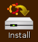
You can save TOMOYO Linux policy using /usr/lib/ccs/savepolicy command in root user. The newly saved policy is used from next boot sequence.
In this tutorial, you have experienced the file access control, which is the most basic function of TOMOYO Linux. TOMOYO Linux has more and more functions. Please see the following documents to use TOMOYO Linux more effectively.